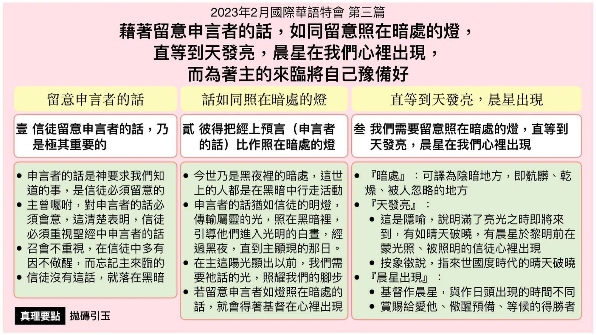

第三篇 借着留意申言者的话，如同留意照在暗处的灯，直等到天发亮，晨星在我们心里出现，而为着主的来临将自己预备好
前言
当我们留意申言者那更确定的话时，我们必 须不能马虎，也不该好奇，更不可断章取义， 乃要遵守书上豫言的话， (启二二 7 ，)并与 神有亲密的关系，(诗二五 14 ，)如此， 申言 者的话(经上的豫言)就在我们里面，使我们 能摸着主的自己，而豫尝主的显现(同在) 。 今天我们若一直在这豫备的过程中，那日就 能得着基督那明亮的晨星实际的出现，作我 们的赏赐 。(启二 28~29 ，二二 16 下。)
真理要点(鸟瞰)
壹 留意申言者的话 ：①神对我们的要求②主耶稣曾经嘱咐 ③儆醒不忘主来临④不会落在黑暗里
贰 如照在暗处的灯 ：①今世是黑夜暗处②能传输属灵的光 ③照耀我们的脚步④基督出现在心里
叁 直到天亮晨星现 ：①暗处指忽略之处②天发亮乃是隐喻 ③晨星出现黎明前④作得胜者的赏赐
经历应用(操练)
当我们敞开我们的心，留意申言者的话，就有东 西在里面照耀。当我们祷读圣经经节的时候，在 深处感觉发光、照亮，这种照亮产生向主耶稣的 爱。我们觉得祂是何等可爱。我们会说，『哦，主 耶稣，我爱你，我没法用话语表达你是多么可 爱！』许多时候由于这个照亮，我们甚至爱主耶 稣到癫狂的地步。那就是耶稣临到我们，如同天 发亮，作为晨星在我们心里出现。
负担
关于主的再来，首先，我们该有的态度乃是：(1)恋 慕主；(2)热切等候；(帖前一 10；)(3)满有盼望。(多 二 13 。)其次，我们该有的操练乃是： (1)要儆醒谨 守；(帖前五 6，彼前五 8；)(2)要小心；(路二一 34；)(3) 要时时儆醒，常常祈求；(路二一 36；)(4)要遵守主 忍耐的话； (启三 10 ；)(5)要守住主的工作； (启二 26 ；)(6)要彼此安慰。 (帖前四 18 ，五 11 。)末了， 我们该有圣别的生活和敬虔，期待并催促神的日子 來臨。 (彼后三 11~12 上。 )
